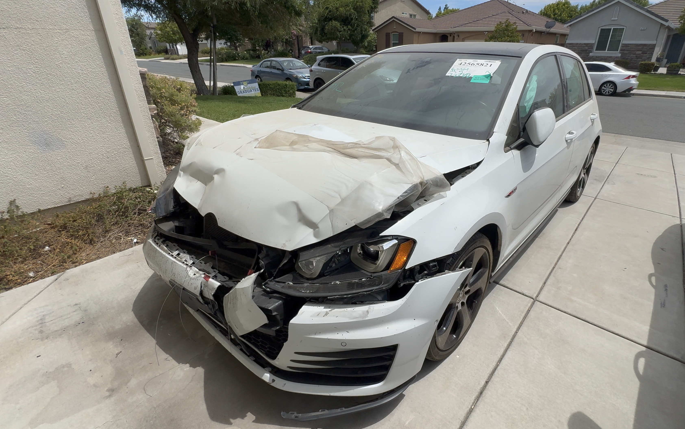

The Machines.
Performance cars, daily drivers and enthusiast vehicles worth understanding beyond the spec sheet.
OWN • DRIVE • EXPERIENCELakache Auto is about the complete automotive experience — the machines we chase, the projects we take on, the problems we solve and the life that happens around all of it.
Before the growing garage, before the next project and before Lakache Auto became what it is today, there was a wrecked white GTI and the decision to bring it back.


Lakache Auto didn't begin with a studio, a collection of project cars, or a plan to build an automotive brand. It started with this car.
A wrecked 2017 Volkswagen Golf GTI Autobahn became the project that started the Lakache Auto YouTube channel. The goal was simple: take a damaged car, figure out what it needed, rebuild it and document the process along the way.
That first GTI became more than just a rebuild. It created an opportunity to learn, solve problems, make mistakes, improve and share the entire experience with other people who love cars.
One project eventually became another. Rebuilds expanded into DIY repairs, long-term ownership stories, auction cars and the real-world experiences that happen after bringing a car home.
Today, the cars may be different and the projects may be bigger — but the idea hasn't changed.
Start with a car. Do the work. Learn from it. Share the story.
FULL CIRCLE. Years after the white Mk7 GTI started the channel, another GTI joined the story — this time a wrecked 2024 Mk8 Autobahn. Different generation. Bigger project. Same idea: save the car, do the work and document the journey.
Lakache Auto follows the full enthusiast journey: finding the right car, rebuilding what can be saved, solving the problems nobody planned for, living with the finished machine and sharing what was learned along the way.
The goal is not simply to show damaged cars or finished cars. It is to document the process — the decisions, the work, the mistakes, the ownership experience and the stories that make every project different.
Because for us, cars are more than transportation. They create projects, conversations, skills, memories and experiences. Cars build more than cars.
Three parts of one automotive story — from the cars worth owning, to the work behind saving them, to everything the journey creates around them.
Performance cars, daily drivers and enthusiast vehicles worth understanding beyond the spec sheet.
OWN • DRIVE • EXPERIENCEHands-on repairs and rebuilds, including the unexpected problems and problem-solving behind every transformation.
REPAIR • RESTORE • LEARNThe culture, lessons, people and experiences that grow around a genuine passion for cars.
CREATE • SHARE • LIVEEvery project has a story before the first tool comes out and another story after the last bolt goes in. Lakache Auto exists to tell both — with real cars, real work and real-world ownership.